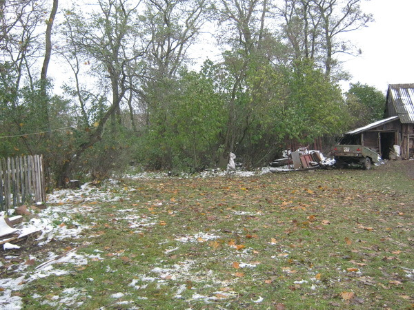
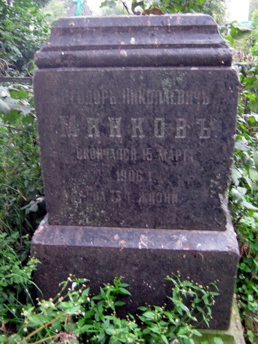
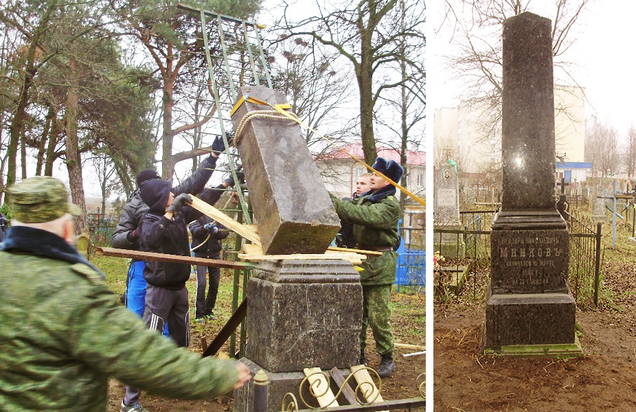

Тодор Минков
Дрогичинский период жизни Тодора Минкова всё ещё остаётся малоизученным. Но некоторые материалы всё же проливают свет на некоторые стороны существования Южнославянского пансиона на дрогичинской земле.
Родился будущий генерал царской армии в болгарском городе Русе, принадлежавшем тогда Османской империи, 2 января 1830 года. После окончания начальной школы Тодора Минкова отправили в Европу. Получив гимназическое образование в Вене, Тодор поступил в политехнический институт в Дрездене.Будучи студентом, Минков пошёл на Крымскую войну(1853-1856) и в боях при защите Севастополя получил ранение. После этого переведен на должность одного из адъютантов главнокомандующего Южной армией князя Михаила Горчакова. Видимо, знакомство с князем и служба при нем оказали на молодого человека сильное влияние.Минков хотел остаться в России, но князь Горчаков посоветовал ему закончить образование. В Россию он возвращается только в 1861 году уже с дипломом.В это же время в империю едут выходцы с Балкан, мечтающие о хорошем образовании. Было принято решение об открытии пансиона.Долго выбирали место для пансиона – Киев или Одесса. В конце концов, открыли в Николаеве. С апреля 1863 года и на всю оставшуюся жизнь Федор Николаевич Минков будет связан с Южнославянским пансионом.В 1892 году Южнославянский пансион в Николаеве прекратил свое существование. Минков вместе с семьей в 1893-м перебрался в наши края, в имение Ровины, неподалеку от Дрогичина.Здание, в котором проживали воспитанники и семья Тодора Минкова, было двухэтажным, комбинированной постройки в стиле классицизма. По описаниям жителей Староселья, оно состояло из центральной части, где находился вестибюль на первом этаже, а на втором - кабинет и жилые покои Тодора Минкова. Из вестибюля на два крыла расходились комнаты для воспитанников, библиотека, помещения, оборудованные под классы. В дополнительной постройке находилась кухня. На втором этаже центральной части располагалась небольшая терраса, с которой Тодор Минков каждое утро осматривал свои владения.
Однако в результате нескольких экспедиций были записаны подробные воспоминания Евтихия Рудого. Стало известно, что Тодору Минкову принадлежало два лесных массива. Сохранившаяся часть хвойного леса до сих пор именуется «генералув лис», а большой массив поля от теперешнего озера до райбольницы «генераловэ»Тодор Минков имел чин действительного статского советника, что соответствовало генеральскому чину.Тодор Минков, или как его звали в наших местах «генерал Фёдор Николаевич», оставил настолько глубокий след в памяти людей, что его современники дрогичинцы рассказывали о нём и о его учебном заведении своим детям и внукам. Житель Староселья, Евтихий Максимович Рудой, подробно описал пределы земель имения Минкова, хозяйство и конезавод. В его памяти остались даже породы лошадей. Евтихий Максимович также сообщил, что воспитанников, которые всегда были одеты в красивую, военную форму, обучали верховой езде на лугу южнее Сиреневки.С 1893 г. пансион действовал в имении Ф.Н.Минкова Ровины недалеко от Дрогичина.Все дети из пансиона хорошо знали русский язык, читали книги из библиотек, занимались самообразованием.Выйдя на пенсию (она составляла 1020 рублей в год), Федор Николаевич проживал в Сиреневке со второй супругой Елизаветой Михайловной и детьми. В Беларуси Минков провел 14 лет. В болгарских источниках сведения об этом периоде жизни Ф. Н. Минкова крайне скудны и противоречивы. В лучшем случае сообщается, что он переехал в «одно село в Гродненской губернии. В глухой провинции, которой тогда было Полесье, фигура Ф. Н. Минкова быстро обросла всевозможными легендами. Местные жители считали его «генералом», а порой называли и графом. Его авторитет подкреплялся и новым статусом - начиная с 1893 г. он значится как почетный мировой судья Кобринско-Пружанского округа. Вознаграждения же за свой труд он не получал. Из-за этого местные жители видели в Федоре Николаевиче не только «графа» и «генерала», но также и справедливого, бескорыстного человека.Но истинным призванием Ф. Н. Минкова оставалось воспитание подрастающего поколения. После длительной переписки Федора Николаевича с МИДом России, Южнославянский пансион был возрожден уже во второй раз в местечке Дрогичин Кобринского уезда Гродненской губернии. Правда, на этот раз это был небольшой лицей для подготовки молодежи к обучению в кадетских корпусах. В него принимались мальчики, достигшие 10-летнего возраста. Подобных учебных заведений не было в Беларуси ни до, ни после.

Здесь находился пансион
В болгарских источниках удалось найти сведения о некоторых выпускниках дрогичинского периода. Так, капитан болгарской армии Иван Шопов прославился в Балканских войнах.Офицеры русской армии Димитр Драганов, Никола Ганев и Стоян Болов были активными участниками белого движения.
Упоминание о дрогичинском пансионе - содержится в мемуарах болгарского политика и дипломата Косты Тодорова «В 10-летнем возрасте я был направлен в имение генерала Минкова, где многие славянские! мальчики с Балкан готовились к поступлению в императорские кадетские корпуса». К сожалению, других подробностей об учебе в пансионе он не приводит, т.к. его пребывание в Белоруссии оказалось" недолгим.Семья Ф. Н. Минкова быстро вросла корнями в белорусский быт. Так, сын заслуженного педагога Павел Федорович с 1903 г. служил земским начальником 5-го участка Кобринского уезда. Дочери Ф. H. Минкова – Александра, Надежда, София и Юлия, - жили с отцом в Ровинах.Одна из дочерей Ф. Н. Минкова, София, вышла замуж за Бориса Сергеевича Репнинского и родила в Ровинах сына Георгия. В дальнейшем внук Ф. Н. Минкова Георгий Борисович Репнинский получил известность в Болгарии как архитектор.15 марта 1906 г. Ф. Н. Минков скончался в Ровинах. Великий просветитель был похоронен на окраине местечка Дрогичин рядом со Св. Петро - Павловской часовней (25 июня 1941 г. она была разрушена снарядами нацистских танков). На его могиле установили гранитную стелу.Павел Федорович Минков и его потомки до 1939 г. владели фольварком Жабчицы. В настоящее время судьбу потомков педагога удалось проследить пока лишь по линии его внучки} Александры. Она вышла замуж за уроженца Вильно А. С. Волонсевича, занималась сельским трудом и умерла в 1984 г. Ее сын, Святослав Алексеевич Волонсевич, стал кандидатом технических наук. Его дети, праправнуки Ф. Н. Минкова Игорь и Ольга, живут в Волгограде.В Болгарии смерть великого педагога вызвала глубокую скорбь.19 марта по инициативе живущих в Варне бывших воспитанников Южнославянского пансиона в Николаеве была отслужена панихида по усопшему Тодору Николаевичу Минкову.Вскоре после смерти педагога прекратил существование и Южнославянский пансион. Огромный архив Ф. Н. Минкова сгореол во время Первой мировой войны. Тогда же сгорела и сама усадьба Ровины.В том же 1906 г. имя Тодора Минкова получила основанная по его завещанию в Софии начальная школа. Ныне это одно из престижных учебных заведений болгарской. На его фасаде установлена мемориальная доска в честь основателя.Могила Тодора Минкова на дрогичинском кладбище была впервые обнаружена экспедицией учащихся историко-краеведческого кружка гимназии города Дрогичина под руководством С. П. Волосюка в 1999 году. Захоронение было расчищено от завалов.

Разрушенный памятник Тодора Минкова
Долгое время найденное захоронение находилось в разрушенном состоянии. Лишь в 2012 году воспитанники Слонимского кадетского училища смогли восстановить памятник в его в первозданном виде. В настоящее время при содействии Дрогичинского районного исполнительного комитета начато благоустройство территории вокруг захоронения

Восстановленный памятник